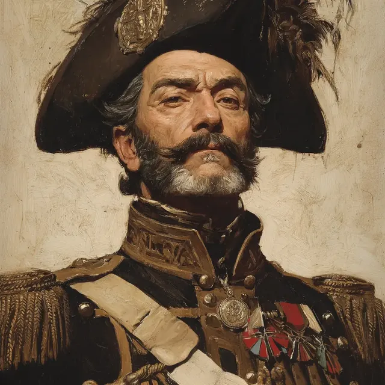

Général Patrice de MacMahon
Général Patrice de MacMahon, a French military officer recently returned from the Crimean War, is a figure marked by both charm and a casual demeanor. He is always dressed in modern attire, favoring trousers and a waistcoat, though he often foregoes a formal tie. His long, salt-and-pepper curly hair is well-groomed, hinting at his attention to personal aesthetics, despite sometimes appearing disheveled, particularly in the mornings after indulging in wine.
At a dinner hosted at Thymbra Farm, he is welcomed by Osman Hamdi Bey and the Calvert family, where Osman praises his courteous assistance. Engaging effortlessly in conversation, the general shares sanitized tales of his wartime experiences, weaving narratives that reflect on themes of war and victory, which resonate with the guests, especially in the French tongue. His curiosity shines through as he inquires about local archaeological digs, specifically a significant find, a megaron, piquing his interest in the ancient.
The following morning, Général de MacMahon finds himself on the terrace alongside Rufus Dimitrious, both nursing the remnants of their hangovers. They exchange light banter before a flowering tree outside loses its vibrancy, startling the guests nearby. Though his early morning habits may leave him in a somewhat inebriated state, his charm and inquiry remain intact, especially when prompted to engage with their surroundings, including the peculiar leached tree. While he approaches the phenomena casually, attributing any oddities to the eccentricities of those around him, he internally recognizes that something is amiss.
Général de MacMahon is affiliated with explorers and researchers, including Rufus, and participates in discussions exploring potential archaeological finds and ancient histories relating to Troy. While he does not lead the investigations into missing individuals, he accompanies others in their search, embodying a blend of military authority mingled with a laid-back charm. This combination makes him a distinctive presence within the group, ever-engaged yet often maintaining an air of detachment towards the magical phenomena they encounter.